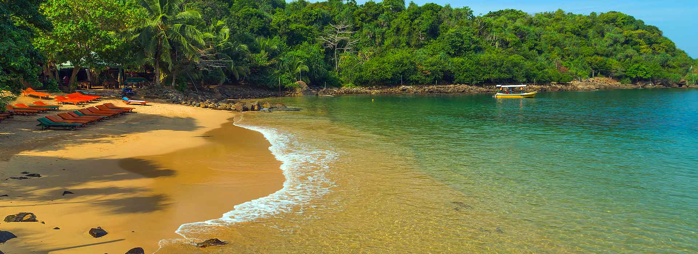

A hidden gem nestled in the lush Rumassala hill, offering a quiet escape from the main tourist beaches.
Jungle Beach is a secluded strip of golden sand located on the Rumassala hill, just across the bay from Galle Fort. It is a favorite among those looking for a more tranquil and intimate beach experience compared to the bustling Unawatuna.
The waters here are generally calm and perfect for snorkeling. The surrounding jungle provides a lush canopy, and a short hike through the woods adds a sense of adventure to the visit. It is the perfect place to spend a relaxing afternoon away from the crowds.
Back to Galle Hub